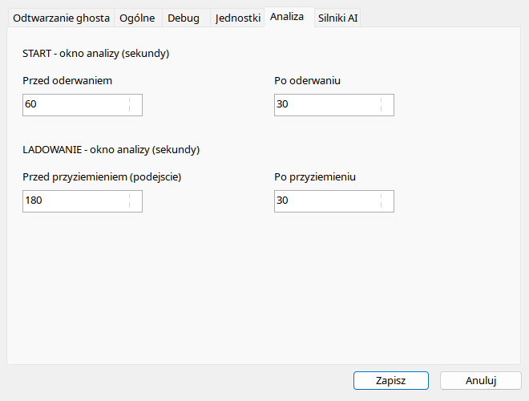

Cztery pola opisuj¹ niezale¿nie czas przed i po oderwaniu oraz przed i po przyziemieniu. Wszystkie wartoœci s¹ sekundami. Wiêksze okno pomaga zobaczyæ konfiguracjê i stabilizacjê, ale zwiêksza dane wejœciowe oraz mo¿e przekroczyæ kontekst modelu. Granica pliku ogranicza faktyczny zakres — wpisanie 180 sekund nie doda brakuj¹cych próbek sprzed pocz¹tku nagrania. Po zmianie tych pól nowy raport korzysta z nowego zakresu; istniej¹cy zapisany raport nie zmienia treœci automatycznie.
| Opcja / czynnoœæ | Dzia³anie i ograniczenia |
|---|---|
| Przed startem | Domyœlnie 60 s, zakres 1–300, przed oderwaniem. D³u¿szy kontekst pokazuje rozbieg, ale zwiêksza dane wejœciowe. |
| Po starcie | Domyœlnie 30 s, zakres 1–300; pocz¹tkowe wznoszenie, nie ocena ca³ego lotu. |
| Przed l¹dowaniem | Domyœlnie 180 s, zakres 1–300. Wiêksze okno nie odzyska niezapisanych próbek podejœcia. |
| Po l¹dowaniu | Domyœlnie 30 s, zakres 1–300; dobieg i kolejne kontakty. |
| Limity | Granice nagrania, kontekst modelu i timeout ograniczaj¹ faktyczne wejœcie. |
